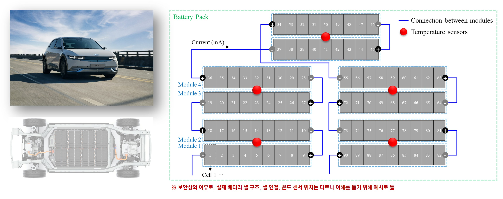

Back to Projects
이상치 탐지 모델을 활용한 고장 예측 알고리즘 개발
Development of a Battery Failure Prediction Algorithm Based on Anomaly Detection
Hyundai Motor Group (Hyundai NGV) · Feb. 2024 – Mar. 2025

Overview
전기차 배터리의 신뢰성은 차량 안전성과 직결되지만, 실제 고장 (비정상) 데이터가 부족해 정확한 고장 예측이 어렵다. 본 과제는 KAIST·현대NGV 공동 연구로, 실험실 데이터를 활용한 정상-비정상 식별 프레임워크를 제안하고, 실시간으로 팩·셀 단위 정밀 진단이 가능한 이상치 탐지 모델을 개발한다.
My Role
- 역할: 참여연구원(KAIST 박사과정)
- 셀 단위 데이터 전처리 파이프라인 설계 및 시계열 예측 기법 담당
- 셀-셀 관계를 학습하는 그래프 오토인코더(GAE) 기반 이상 탐지 모델 구현·학습
- 셀 단위 이상 식별 결과 검증 및 Python 코드 결과물 패키징
Methodology
두 단계 프레임워크로 구성된다. (1) 팩 단위 탐지: AE / VAE / β-VAE 기반 representation에 LSTM을 결합해 시계열 잠재 공간에서 비정상 상태를 탐지 (협업 파트).(2) 셀 단위 탐지 (본인 담당): 셀-셀 관계를 그래프로 표현하고 그래프 오토인코더(GAE)로 셀 간 상호작용을 학습해 개별 셀의 이상을 식별. 두 모델은 정상 데이터만으로 학습되어 비정상 데이터 부족 문제를 우회한다.
Results / Key Outcomes
- 비정상 데이터 없이도 높은 예측 성능을 유지하는 이상치 탐지 모델 확보
- 팩·셀 단위 정밀 진단 → 특정 모듈만 교체 가능, 유지보수 비용 절감
- GCN 기반 셀 단위 분석으로 배터리 성능 저하를 사전 예측 → 차량 수명 연장
- Python 기반 분석 코드 제공 + 논문/특허 출원 검토